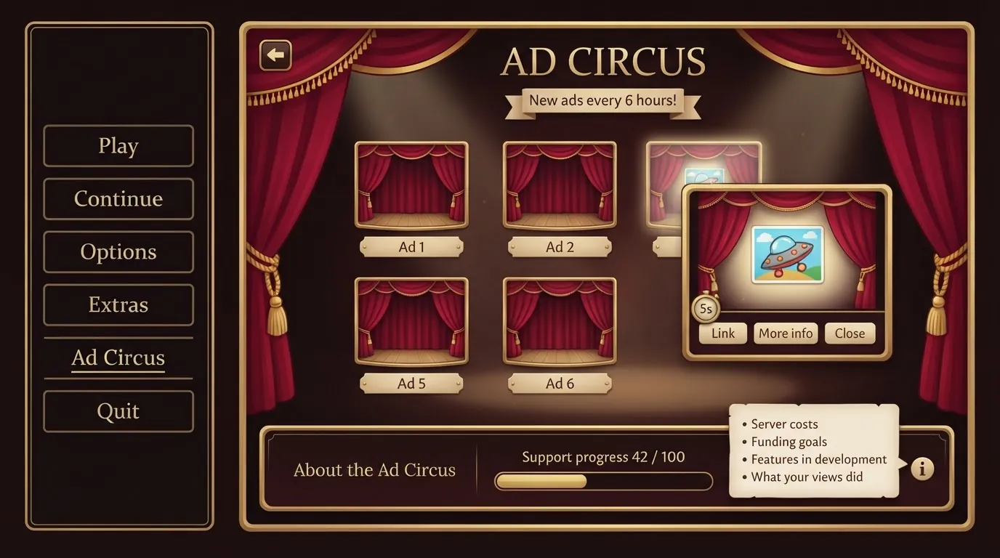

The problem with ads in games
Most games that run ads treat the player's attention as something to be taken. An ad plays between levels, in the middle of a session, or right as you press "continue". A banner sits at the edge of the screen while you play. A pop-up appears just as you were about to do something. The player never asked for any of it, so every ad lands as an interruption, and people learn to hate ads, the game that shows them, and the developer behind it.
That's a shame, because ads aren't evil by themselves. An ad is someone telling you that a thing exists. Sometimes that thing is genuinely interesting, and the money from the view keeps a small developer going. The problem isn't the ad. It's that the ad is forced on you.
So what if the player chose when to see ads?
What the Ad Circus is
The Ad Circus is a dedicated screen, separate from the rest of the game. You reach it from a button in a menu: the main menu, the options or pause menu, or an "Extras" page, whichever fits the game. The button sits quietly among the other buttons. It's never highlighted, never flashing, never advertised more than any other function in the game. It's simply there, like the credits.
The game never shows an ad anywhere else. No mid-roll ads, no ads during intermissions, no ads between levels, no ads as a toll for continuing. If you never open the Ad Circus, you never see a single ad.

Inside is a small grid of ads, around four to eight, each shown as a little stage with its curtains closed. The selection cycles to fresh entries every few hours ("New ads every 6 hours!"), so there's always a reason to peek in now and then and see what's on offer today.
That's the whole spirit of it. I like discovering new things, and ads can be one way to discover them, but I only want to see them when I want to see them. So you wander into the Ad Circus whenever you pass by the menu, see what's playing, maybe find something cool or interesting, or just laugh at a crappy ad. Hence the name: it's a little show you visit for fun, not a checkpoint you have to pass.
How a visit works
- Open any tile to view that ad. The curtains part and the ad plays.
- Close at any time. There's no obligation to watch an ad fully, and no penalty for closing it.
- Five seconds counts. Viewing an ad for at least 5 seconds registers as a valid view and adds to the support progress. A small timer shows when you've reached it.
- Follow up if you want. The viewer has a link to the advertised thing and a "more info" button where there's more to say, next to the close button.
The 5-second rule matters more than it looks. Plenty of people will visit the circus mainly to support the developer, with the ads themselves as a side interest. If they don't know what makes a view count, they might click through a bunch of ads too fast, or close them too early, and their goodwill would quietly go nowhere. So the requirement is stated openly, right where you watch: stay five seconds and it counts. Nobody has to guess.
Being honest about what the support is for
Below the ads sits an "About the Ad Circus" section with a support progress bar, something like "Support progress 42 / 100", that fills as valid views come in. Next to it, an info button opens a pop-up that explains what the support actually goes to:
- the current server costs and data limits, if the game runs on servers,
- expenses and funding goals,
- new features in development and what the developer wants to do next,
- the impact of the support so far, and news from the developer.
This turns the circus into a small window onto the project itself. If a game needs servers to run, or the developer needs a certain amount to keep updating it, that's part of the experience, and players deserve to see it plainly instead of being guilted or tricked into paying. The circus should communicate clearly what it is, why it's there, and what it gives both sides, and link to where the project is heading, saying that any support goes toward those aims.
What goes in the circus
There are two kinds of entries:
- Standardised ads from an ad network such as Google Ads, in the network's common formats.
- Custom-made ads, put together by the developer: an image, a title and description, one or more links, or a video. These can promote the developer's other projects, friends' games, or anything else worth showing.
One firm rule: no interactive content inside the circus. A link can lead somewhere interactive, but the circus itself stays a calm viewing room: no mini-games, no playable ads, nothing that grabs your controls.
The tone should stay fun and casual. The circus can even poke a little fun at the usual ways other games push ads on people, as long as it's a passing remark rather than a loud sermon. And it should never beg. People watch if they want to, for their own reasons.
Why this works better
Forced ads make the player resent the game, the ad, the advertiser and the developer all at once. The Ad Circus flips every one of those:
- The player is in control. Every single ad view is a choice, so nobody is ambushed and nobody's session is broken.
- Ads become discovery. A viewer who chose to look is actually paying attention, which is exactly what an ad wants.
- Support becomes visible. Players can see their views adding up and what they're for, so supporting the game feels like taking part, not being milked.
- Trust survives. A game that never forces ads on you is a game you're happy to come back to, and maybe to visit the circus of now and then as a thank-you.
I first sketched the Ad Circus for Shape Smasher, where the ads can even be smashed for fun, and it sits as a plain menu entry in other designs of mine too. It works just as well in a mobile game, a PC game or a web game: all it needs is one quiet button and the patience to let players come to it.
Talk about it
Questions, disagreements and ideas of your own are all welcome. Discuss this article with other readers on the Reactorcore Games Discord, follow new articles and dev news on Patreon, or write to me directly.